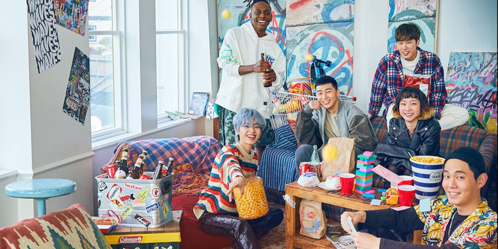
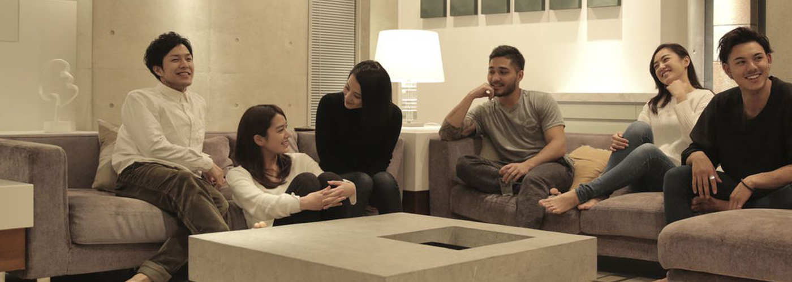
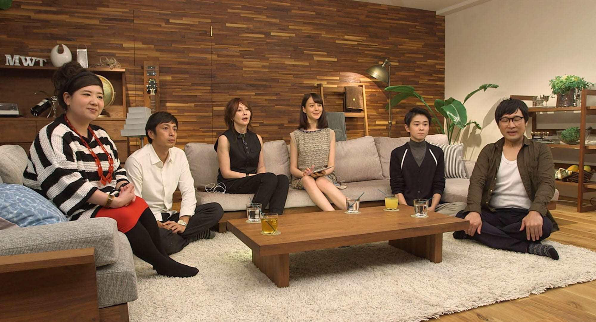

Ich weiß. Ich weiß. Ihr denkt euch was redet der Typ. Wieso sollte ich mir sowas anschauen wenn ich Haus des Geldes oder Stranger Things, buuuut listen K-Dramas sind eine andere Welt. Und absolut süchtig.
1. Itaewonclass 2. Stranger(Secret Forest) 3. Kein Drama aber absolut weird Terrace House


